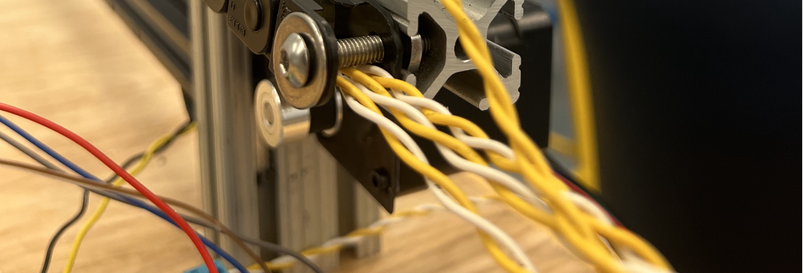
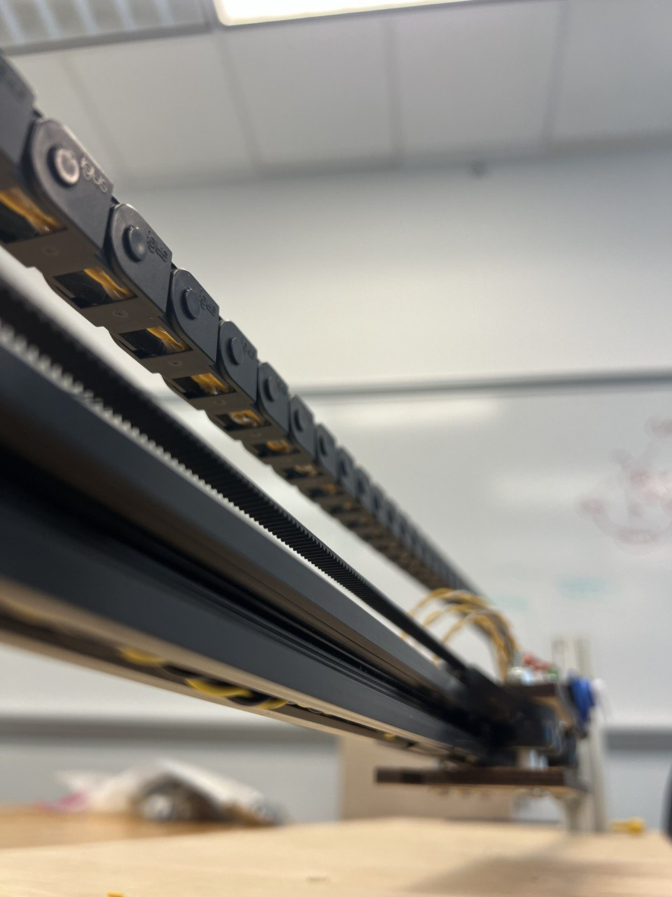
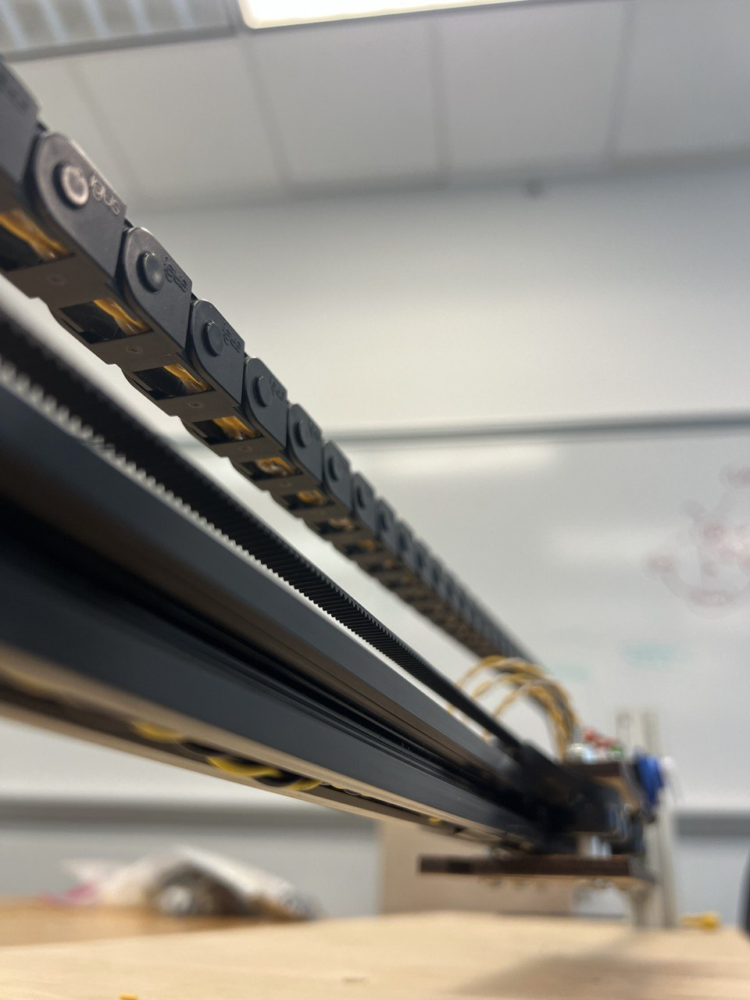
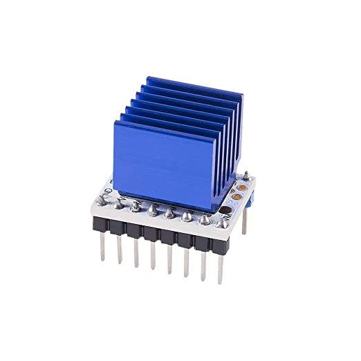

Electrical
Without the electric subsystem, Big Knit wouldn't be able to run. Here's how it works!
Electrical System
In order to robotically knit, we needed a few actuators and sensors. To move the knitting cam precisely, we needed a stepper motor. To find a reference position, we needed limit switches. to add advanced knitting functionality, we needed an unknown amount of servos, placed on the gantry. and of course, everything needs stable power sources.
Here is our complete Electrical System Diagram:

Electrical construction
 

Initially, we decided to go with a fully soldered breadboard shield for the arduino, with 90 degree dupont connectors for all connections. however, it proved to be a very tight fit for all the various connections, and it has hard to debug any electrical issues. We switched to breadboards, but used robust plugabble screw terminals to connect to motors and sensors. To make long wires neater and easier to handle, we twisted them in pairs. This has a side benefit of potentially helping signal integrity on the 12C lines going to the servo motor controller board. To make sure the wires moving out to the gantry were not pinched or caught in the linear slide, we used a cable drag chain, with zip-ties at the start to secure tension on the wires.
Stepper Motor Control
To control stepper motors, we used the TMC 2208 stepper Motor Driver. This driver was selected because it produces a higher quality sine wave output when driving stepper motors, allowing a more silent and vibration free operations. it also features thermal monitoring and shutdown, as well as better micro stepping resolution, while still being compatible with simple arduino stepper motor libraries such as accel stepper.
The chip is powered by the arduino's 5v output, but the motor has a separate 12v power supply. We set the driver's max current using a small potentiometer on the back of the driver module, using the formula linked in the guide above. for our motor, 1.1 amps of current was optimal for temperature and load.
Servo Motor Control
We knew we wanted the ability to add servo motor control of various knitting functions on the gantry, but did not want to have excessive moving wiiring. using the PCA9685 12C PWM/Servo driver board allowed us to use the arduino's I2C communication bus, only 2 wires, to control up to 16 servos. The board also requires 2 power inputs, one for the pwm driver chip, and one for the servos.
Power
To power the stepper motors, we used a separate AC to 12v DC power supply. The servo motors are powered by an ISIM Breadboard Power supply, using a 5v USB brick. The Ardunio is powered and controlled via a laptop usb.